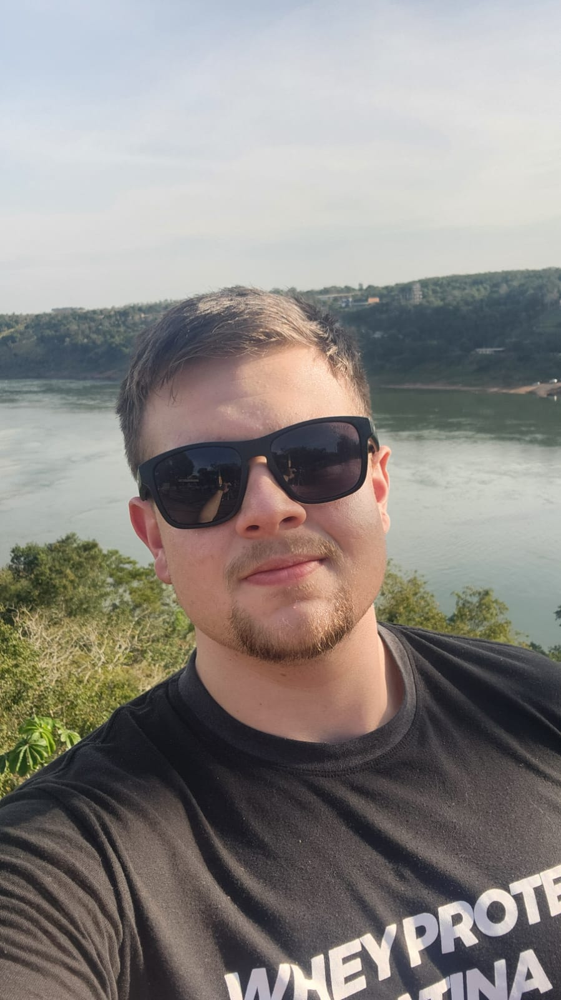

Gabriel Felipe
Jess Meira
Guarituba – Piraquara – Paraná, Brasil
// 01. sobre
Sobre Mim
Desenvolvedor de Sistemas e Engenheiro de Software apaixonado por tecnologia e por construir soluções que impactam pessoas. Com experiência em desenvolvimento back-end, front-end e mobile, atuo com Java, Spring Boot, PHP, .NET, Flutter e mais.
Atualmente Mestrando em Informática pela PUCPR, Bolsista CAPES, desenvolvendo pesquisa na área de computação. Perfil proativo, orientado a resultados e com grande facilidade para trabalho em equipe.
Minha trajetória une formação acadêmica de excelência com aplicação prática em empresas privadas, setor público e pesquisa científica.
// soft skills
// idiomas
// 02. formação
Formação Acadêmica
Mestrando em Informática
PUCPR – Pontifícia Universidade Católica do Paraná
Programa de Pós-Graduação em Informática (PPGIA). Pesquisa em desenvolvimento de software e computação aplicada.
Bolsista CAPESBacharel em Engenharia de Software
PUCPR – Pontifícia Universidade Católica do Paraná
Formação sólida em engenharia e desenvolvimento de software, arquitetura, qualidade de código e metodologias ágeis.
Aluno Marcelino Champagnat · Turma 2022Técnico em Informática
TECPUC – Centro Tecnológico da PUCPR
Formação técnica com foco em programação, redes, banco de dados e desenvolvimento web.
// destaque acadêmico
Aluno Marcelino Champagnat
// Prêmio de Destaque Acadêmico · PUCPR · Turma 2022 · Engenharia de Software
Reconhecimento concedido ao único aluno da turma de 2022 do curso de Engenharia de Software da PUCPR com maior destaque acadêmico. O Prêmio Marcelino Champagnat homenageia o fundador da Congregação dos Irmãos Maristas e é conferido ao estudante que demonstrou excelência, comprometimento e contribuição excepcional ao longo de toda a formação — uma distinção concedida a apenas um aluno por turma.
// 03. habilidades
Stack Técnico
Back-end
Front-end
Banco de Dados
DevOps & Versionamento
Metodologias & Modelagem
Outros
Bônus – Experiência Breve
// 04. experiência
Experiência Profissional
–
Atual
Mestrando em Informática
PUCPR – Pontifícia Universidade Católica do Paraná
Bolsista CAPES- Pesquisa no Programa de Pós-Graduação em Informática (PPGIA)
- Desenvolvimento de pesquisa científica em computação aplicada
- Iniciação Científica e produção acadêmica na área de Engenharia de Software
- Bolsista integral CAPES – dedicação exclusiva à pesquisa e ao ensino
–
Ago/2025
Auxiliar de Programação
Evo Sistemas Inteligentes
Estagiário → Auxiliar de Programação- Desenvolvimento de sistemas web e APIs REST em ambiente ágil
- Evolução de estagiário para Auxiliar de Programação durante o período
- Atuação em times Scrum com entregas incrementais e sprints semanais
- Manutenção e evolução de sistemas legados
–
Fev/2025
Coordenador de Estagiários
Prefeitura Municipal de Piraquara
Estagiário → Coordenador de Estagiários- Gestão e coordenação de equipe de estagiários de TI
- Desenvolvimento e manutenção de sistemas para administração pública
- Implantação de soluções tecnológicas para processos municipais
- Liderança técnica e mentoria de novos estagiários
–
Abr/2023
Desenvolvedor de Sistemas
DBlink Sistemas
Desenvolvedor- Desenvolvimento full-stack de sistemas corporativos
- Implementação de APIs e integrações entre sistemas
- Modelagem e otimização de banco de dados relacional
- Aplicação de padrões de projeto e boas práticas de desenvolvimento
// 05. projetos
Projetos em Destaque
KnowNet
Plataforma de rede de conhecimento colaborativo para estudantes e profissionais, com compartilhamento de conteúdo e conexões acadêmicas.
GOIT
Sistema de gerenciamento de ordens de serviço e tickets de suporte técnico, com painel de controle e gestão de filas para equipes de TI.
Sistema de Ponto
Controle de ponto eletrônico com gestão de jornada, banco de horas, relatórios gerenciais e integração com folha de pagamento.
Goblin Slayer
Jogo 2D desenvolvido como projeto acadêmico, com sprites animados, detecção de colisão, progressão de fases e lógica orientada a objetos.
Árvore Binária & AVL
Implementação e visualização de estruturas arbóreas (BST e AVL) com animações de inserção, remoção, rotações e balanceamento automático.
Projeto Final Volvo
Projeto integrador em parceria com a Volvo — solução tecnológica para processo industrial com metodologias ágeis e engenharia de requisitos.
DOS
Sistemas distribuídos e processamento paralelo explorando computação de alto desempenho, com pipelines de dados e arquitetura escalável.
PANDA
Plataforma de gerenciamento de links com analytics, painel administrativo e integrações externas. Projeto vinculado à pesquisa de mestrado.
// 06. voluntariado
Voluntariado & Liderança
Coordenador de Pastoral da Comunicação
Paróquia Nossa Senhora Auxiliadora
Coordenação das atividades de comunicação pastoral, gestão de redes sociais, produção de conteúdo e comunicação com a comunidade paroquial.
Coordenador dos Servidores do Altar
Paróquia Nossa Senhora Auxiliadora
Liderança e formação da equipe de servidores do altar, organização de escalas, capacitações e acompanhamento espiritual do grupo ministerial.
// 07. contato
Entre em Contato
Vamos conversar! 👋
Estou disponível para novas oportunidades, colaborações, pesquisas e parcerias. Não hesite em entrar em contato — responderei o mais rápido possível!
// envie uma mensagem
// abre seu cliente de email com os dados preenchidos